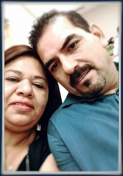

History
In the year 2000 Jose Luis and Estela Rocha were presented with the opportunity to buy a prospering family owned mexican restaurant and bakery from Estela's older sister Faustina. In the early 2000's Conroe Texas did not have many Mexican Bakeries so joining a bakery and restaurant made it possible to growth. When you visit Taqueria Y Panaderia Puro Rioverde, you can rest assure that you will always be greeted by Estela who handles order taking, cash register and serving the customers. In the kitchen you will find Jose Luis who is the only cook in the establishment which guarantees the same quality of food no matter the time of day you visit.